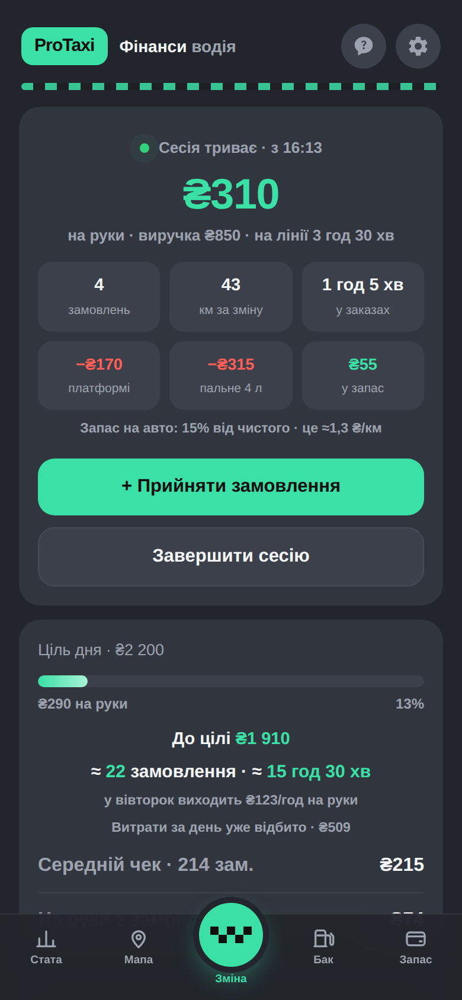
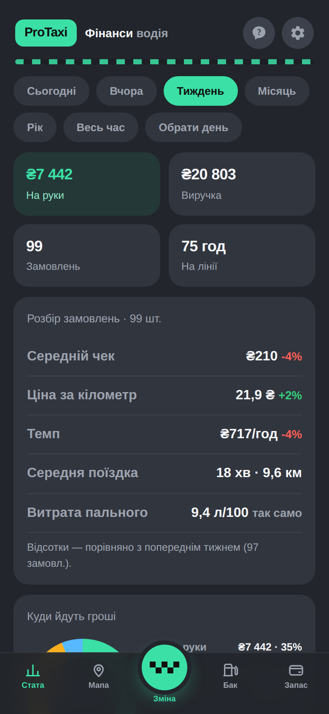
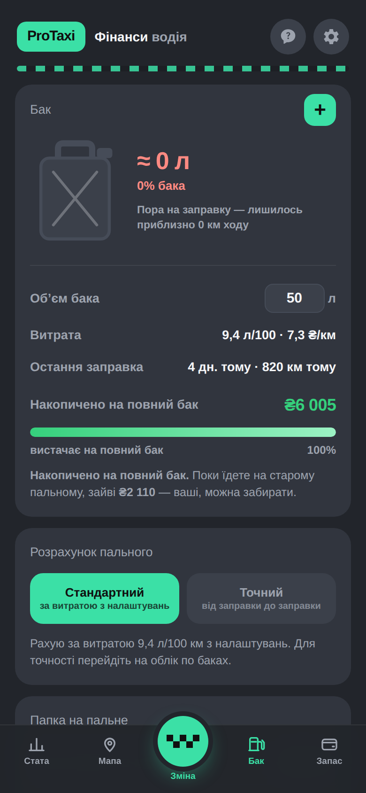

Застосунок рахує кожну зміну до кінця: мінус комісія платформи, мінус еквайринг, мінус пальне по чеках, мінус оренда авто, мінус те, що варто відкласти на ремонт. Лишається одна чесна цифра — на руки.
Типова зміна на 2 850 ₴ виручки. Ось що з неї залишається насправді.
Комісія, еквайринг з карткових оплат, чайові, податки для ФОП, оренда авто. Скільки завгодно сесій за день — обід не ламає статистику.
Кожне замовлення підсвічується проти вашого середнього темпу: зелене — вигідніше, червоне — на ньому ви втрачаєте. Одразу видно, наскільки.
Не «за паспортом», а по чеках. Скільки лишилось у баку, на скільки вистачить, скільки треба відкласти на наступну заправку.
Ваші знижки Uklon чи Bolt підставляються одним дотиком. Застосунок рахує чисту ціну літра по кожній мережі — вигідна не та, де більша знижка.
Не просто відсоток, а скільки ще замовлень і скільки часу — за вашою ж статистикою саме в цей день тижня.
З кожної зміни відкладається частка на ТО, гуму й ремонт — або на оренду наперед, якщо авто не ваше. Щоб поломка не була катастрофою.

Зміна: скільки на руки просто зараз і скільки лишилось до цілі дня.

Тиждень: виручка окремо, на руки окремо. Середній чек, ціна за кілометр, темп.

Бак: реальна витрата по чеках і порівняння цін на АЗС із вашими знижками.
Записи зберігаються на вашому телефоні й у вашому Telegram-акаунті. Автор застосунку не бачить ні ваших сум, ні маршрутів — лише знеособлену статистику на кшталт «скільки водіїв відкрили застосунок сьогодні». Копію всіх даних можна будь-коли забрати у файл.